WEB Fundamentals
WDD 130
Publish You Site on GitHub pages
Overview
- Task: Create repository to stor your wdd130 folder on GitHub, then use GitHub Pages to publish your site online.
- Purpose: To share your web pages online with the teacher and the world
- Expectation: Everyone will have a url to their web pages hosted on GitHub Pages.
Instructions
-
Step 1: Prepare
- You should have a folder on your computer called "wdd130" that contains all your work.
There must be a file called index.html in that folder.
Here is the way your folders should be setup:
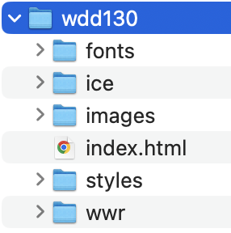
- You should have a GitHub account and know the username and password
- You should have the GitHub desktop program installed and connected to your GitHub account
- You should have a folder on your computer called "wdd130" that contains all your work.
-
Step 2: Create the Repository
- Open GitHub Desktop on your computer
- Choose File -> New repository...
- Name the repository "wdd130" and for the local path choose the folder that contains your wdd130 folder (Don't choose your wdd130 folder!)
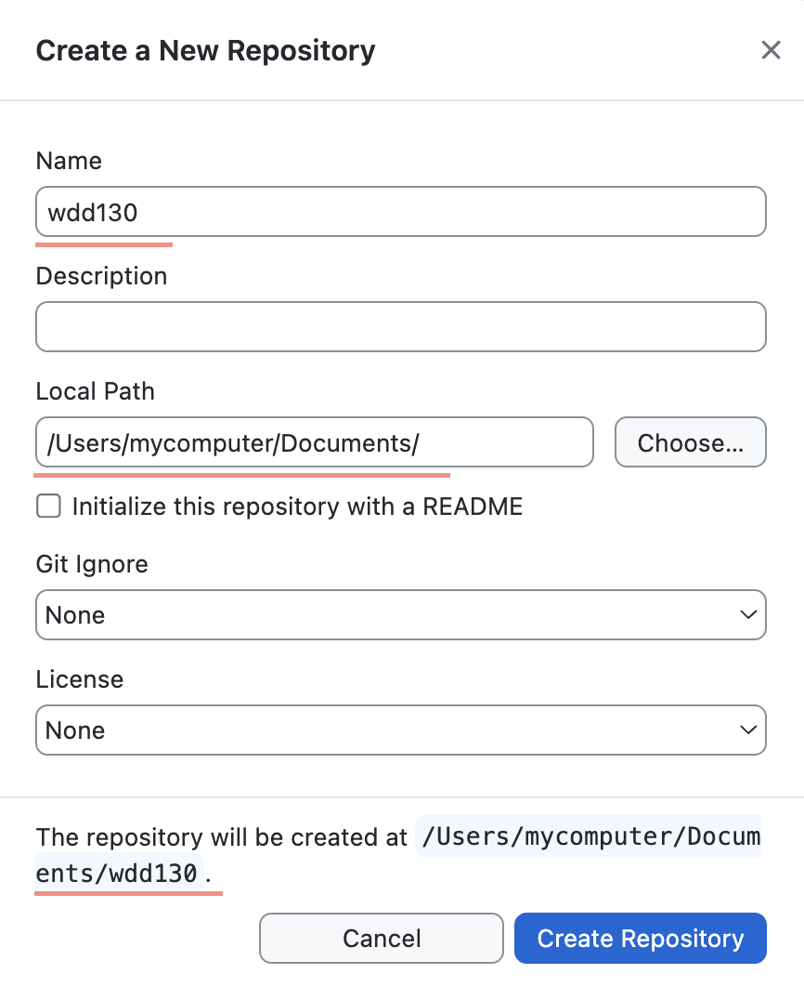
Double check the path at the bottom to be the path of your wdd130 folder. - Click Create Repository
-
Step 3: Publish Repository
- Publish your files to the repository by clicking Publish repository
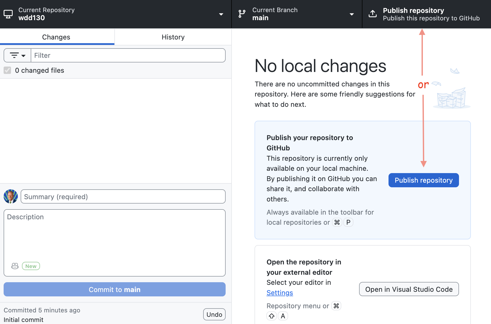
There may be multiple places where you can click to publish. - Make sure to uncheck the private box (it will be a public repository)
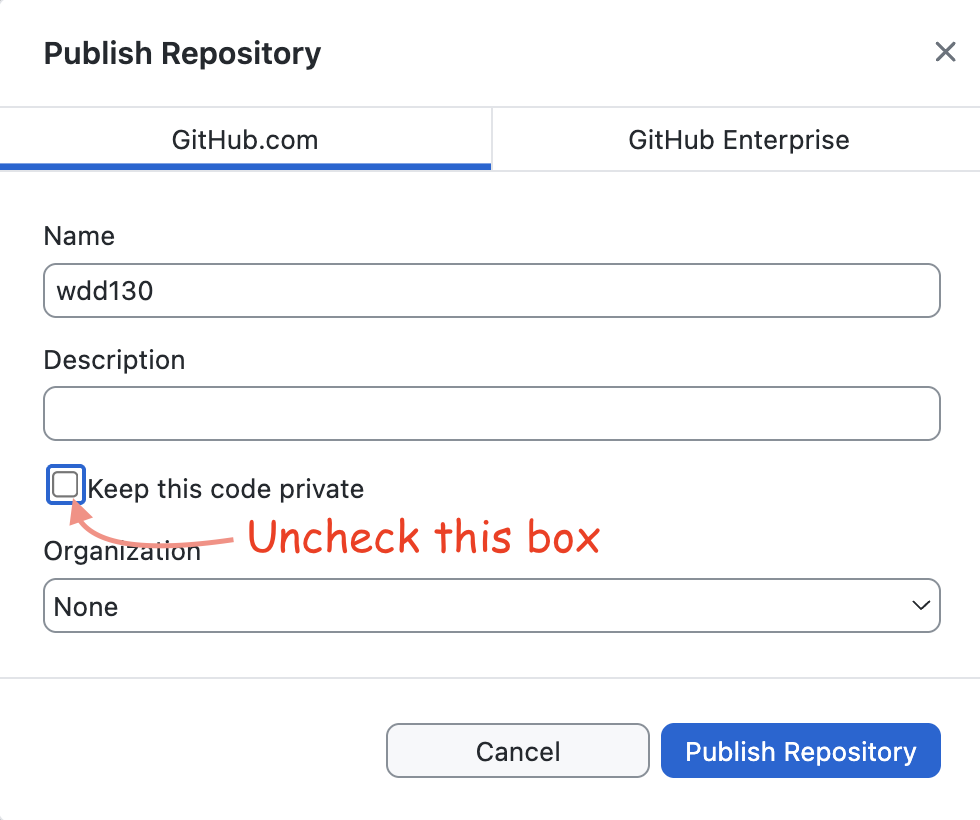
- Publish your files to the repository by clicking Publish repository
-
Step 4: Host on GitHub Pages
- Go to your new repository online by clicking View on GitHub
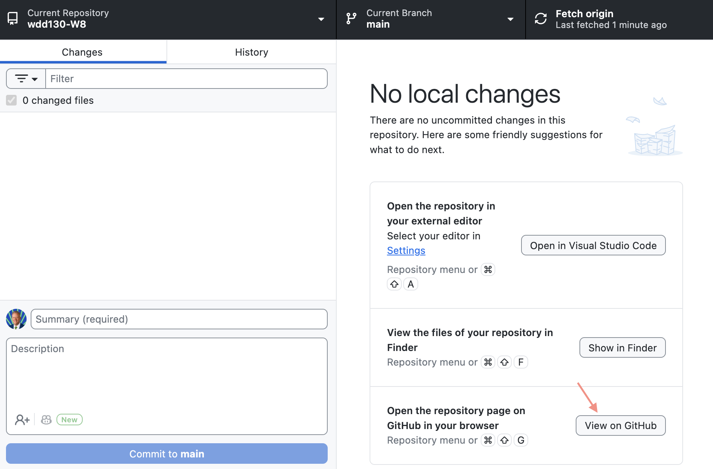
Note: The other buttons are super useful as well, one takes you to VS Code and the other takes you to the files on your computer - It should take you to github.com/yourusername/wdd130 and it should look similar to the image below. Click
on the Settings tab.
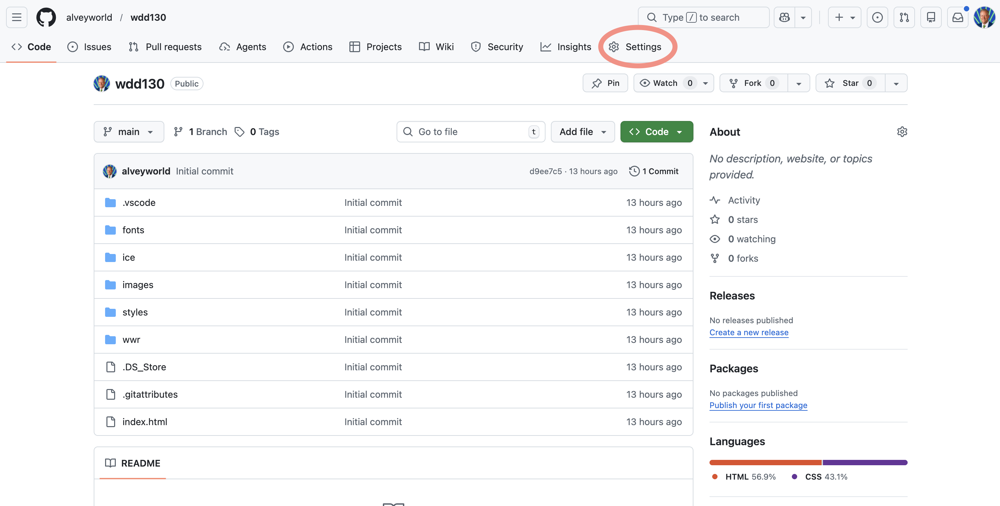
- In the setting menu click Pages, then change the Branch to from None to main and then click Save.
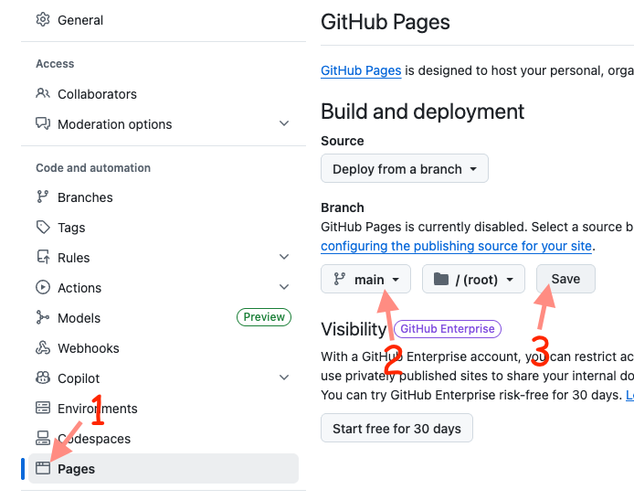
This will tell GitHub to host the files in your repository as a webserver. It may take a few minutes. - To see the status of this process you can click the Actions tab. The little circle will spin while it
is working and it will turn to a green check when it is finished.
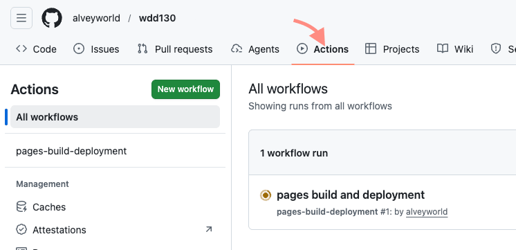
- Once GitHub Pages has completed initialize your server, click the Code tab to view the repository files.
Then click the gear icon in the About section.
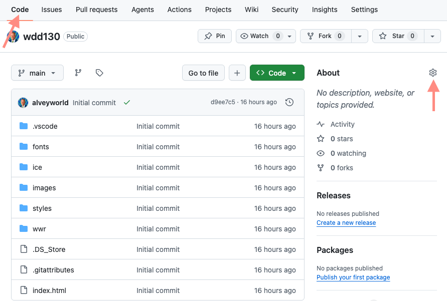
- Check the box that says Use your GitHub Pages website! This will display the URL of your website
hosted online for the whole world to see. Then click Save Changes and it will display the URL of your site in the About
section. Click the URL to test that your pages are being hosted properly. It will look for and display your index.html.
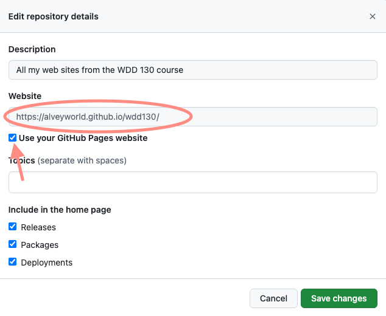
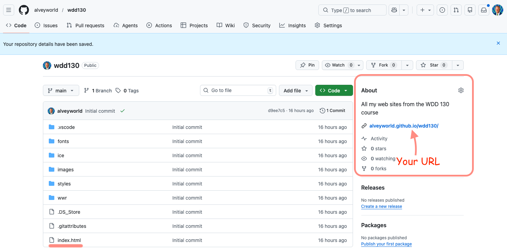
- Go to your new repository online by clicking View on GitHub
-
Submit
Submit the URL of your website hosted on GitHub pages (i.e. https://yourusername.github.io/wdd130/).